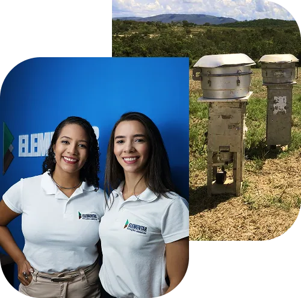
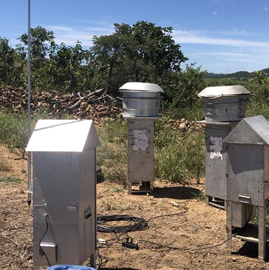

Estevão Ramalho
Gostaríamos de parabenizar a Elementar pela excepcional dedicação em prestar serviços de alta qualidade, com um rigoroso controle das informações do IBAMA e da PF… continuem com o excelente trabalho!
Seu relatório de emissões atmosféricas precisa ser técnico, completo e assinado por profissional habilitado.
Falar agora com um especialista

Você recebe um relatório técnico com:
Já ajudamos diversas empresas a obterem suas licenças ambientais com eficiência e transparência. Conheça alguns dos clientes que confiam no nosso trabalho:
Gostaríamos de parabenizar a Elementar pela excepcional dedicação em prestar serviços de alta qualidade, com um rigoroso controle das informações do IBAMA e da PF… continuem com o excelente trabalho!
A Elementar foi uma das melhores consultorias que contratamos na área ambiental. Sempre proativas e dando o melhor apoio à unidade da Sakura de Ouvidor-GO. Recomendo esta empresa sempre que me perguntam.
Desde o primeiro contato sempre fui bem atendido pela Giovanna e equipe. Assertiva e pronta para atender todas as nossas necessidades e sanar quaisquer dúvidas no decorrer dos processos!
Ótimo atendimento e serviço de qualidade. Passei pelo meu processo de licenciamento sem pendências com a ajuda da Elementar.
Se sua empresa recebeu uma notificação, converse com nosso time para avaliar o escopo, os documentos e os próximos passos. A decisão final cabe ao órgão competente.
Fale com nosso time